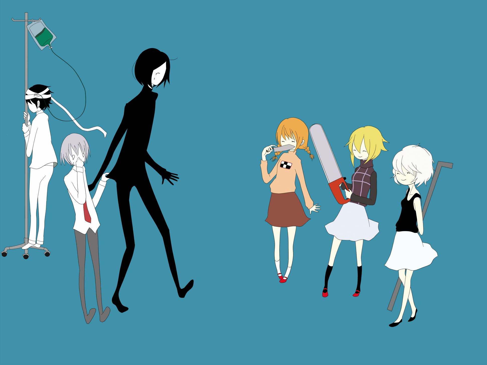
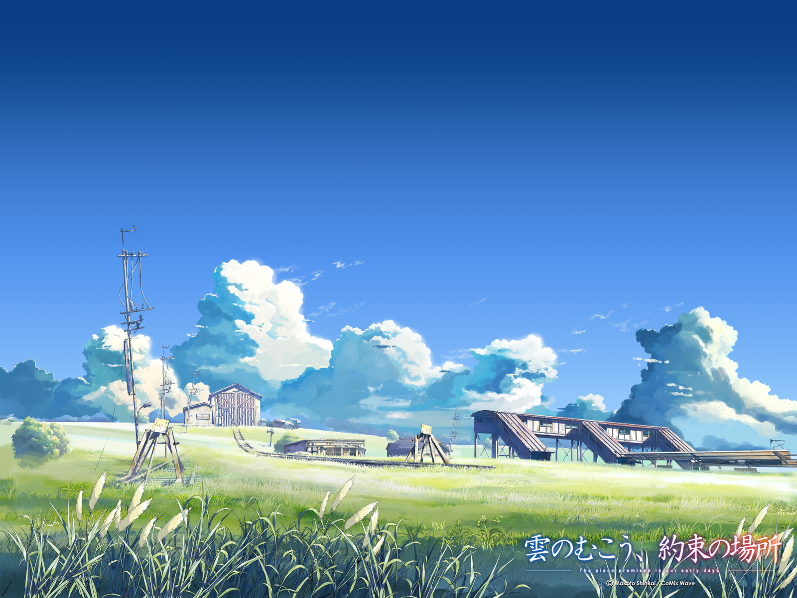

<
>

偶然了解到国内还有个叫coding的东西，由于github是国外的网站，所以访问速度有时真的令人爪机，并且偶尔还会被墙，所以决定还是把博客重新再部署到coding上。
对于coding的博客搭建，只要在github上搭建过静态博客，相信再在coding上搭博客也是很简单的事情，主要的是怎么在git上使用命令 hexo d 时同时把文章同时发布在两个网站上。
话不多说，有问题，先去官方文档瞧瞧再说
传送门
打开我们可以翻一翻，英文有点蹩脚，不过还是可以找到这一部分
1 | 您可同时使用多个 deployer，Hexo 会依照顺序执行每个 deployer。 |
就是说部署多个仓库的话，只要按照上面的格式部署，是可以添加多个仓库的
在网站配置文件_confing.yml上 deploy上加上以下代码：
1 | deploy: |
其中repo后面是你自己仓库的地址
其中得注意下缩进的问题，如果部署时出现报错信息，很有可能你缩进有问题
这样的话我们每次部署时就会同时把文章发布在两个网站上